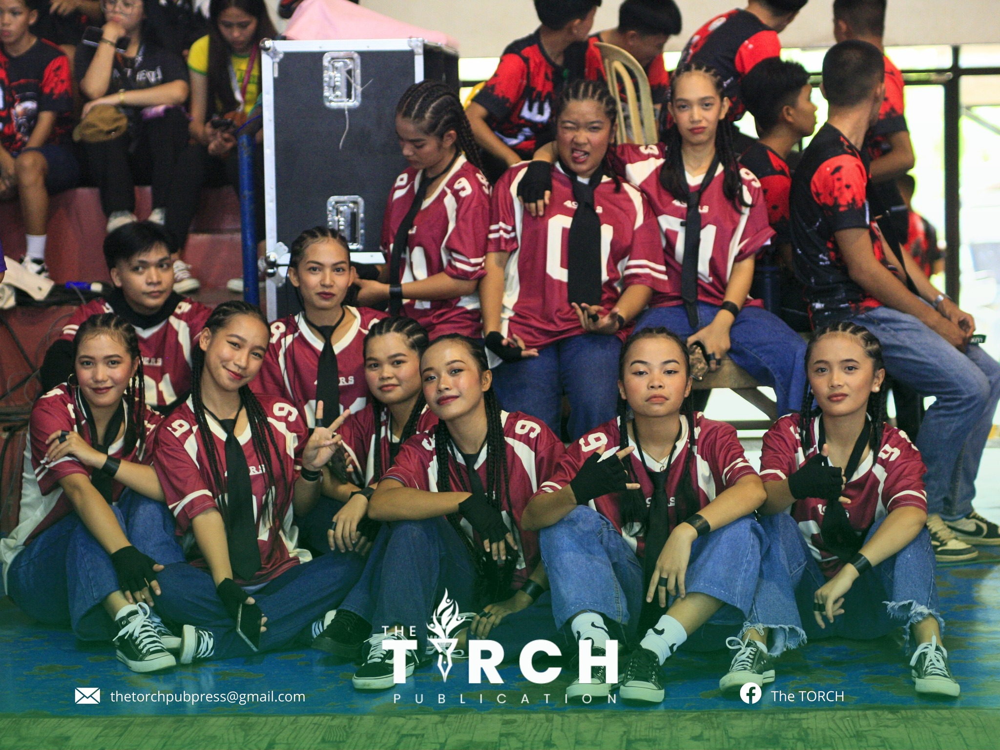
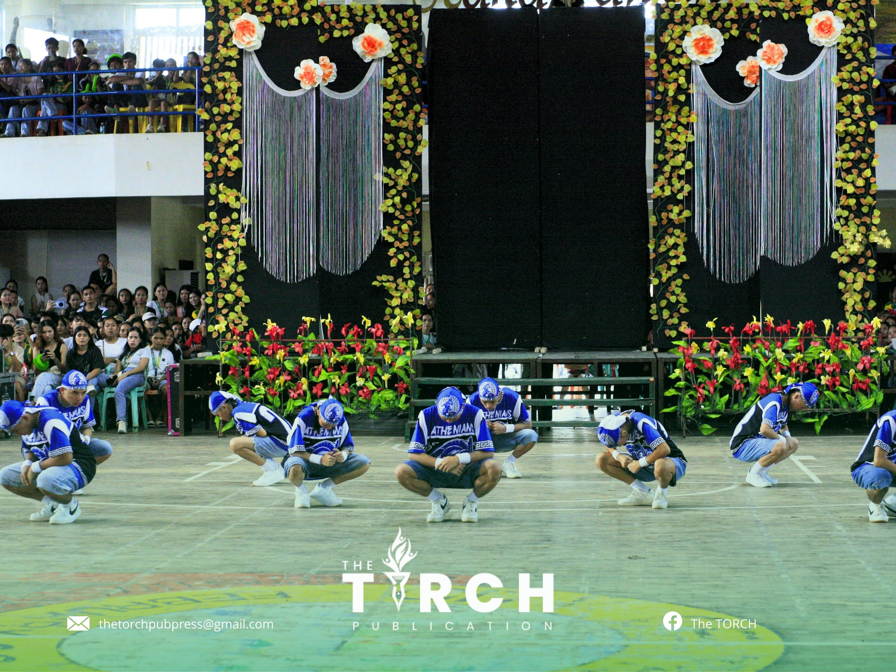
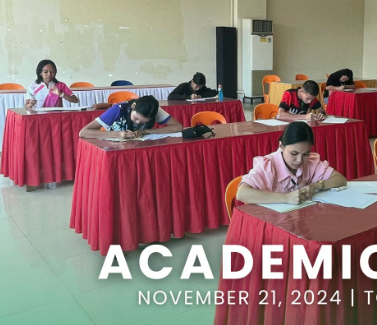
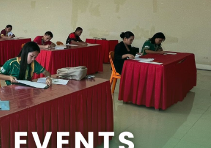
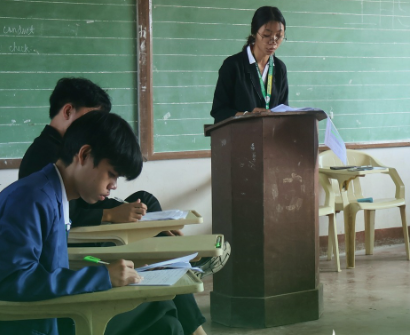

Event 1: "With every sharp move and fluid spin, the dancer tells a story of passion"

I choose hip-hop dance as a reflection of how
I approach life—full of energy, creativity, and adaptability.
Much like a dancer who adjusts their moves to fit the rhythm and beat of the music,
just like how to adapt and respond to the ever-changing flow of situations and challenges around me..

The confidence and authenticity in hip-hop dance are qualities
I admire and strive to embody in my own journey, always staying true to myself while embracing the rhythm of life.
Event 2: "Knowledge is not just learned;
it is discovered, explored, and transformed into wisdom through
curiosity, perseverance, and a passion for growth."

Academics, for me, are like a personal journey of discovery, much like an artist refining their craft. Each concept I learn
is a step toward a larger understanding, and the process of diving deep into subjects mirrors the dedication
I put into improving myself.

There are moments when I struggle,
whether it's grasping a difficult theory or completing an assignment,
but these challenges teach me resilience.Every piece of knowledge
I acquire feels like adding a new layer to my foundation.
Event 3: "Debate is not about winning or losing, but about engaging in a meaningful exchange of ideas"
This is one of my favorite event because our life is much like a debate—filled with differing perspectives,
challenging moments, and constant learning.
Just as in a debate, we encounter opposing viewpoints, experiences,
and choices that force us to refine our beliefs and decisions.

In both, there are moments of passion, frustration, and clarity, where we argue with the world around us and
try to make sense of our place in it. Life, like a good debate,
is not always about winning, but about the growth that comes from it.